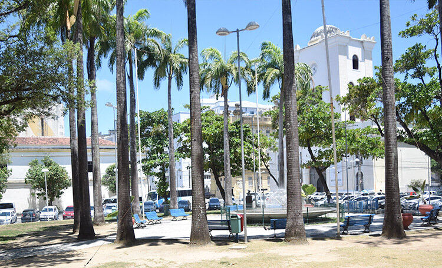
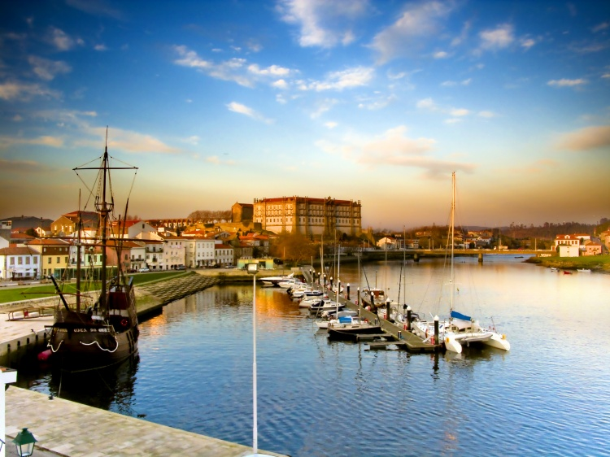

Praça do Arsenal
A Praça do Arsenal é um encantador espaço público no coração do Recife Antigo, cercado por edifícios históricos. É um local popular para passeios, eventos culturais e feiras de artesanato. A praça oferece uma atmosfera agradável e uma vista magnífica do Porto do Recife.
Cais da Alfândega
O Cais da Alfândega é uma área à beira do rio Capibaribe, conhecida por suas belas paisagens e edifícios históricos. É um lugar ideal para caminhar ao longo do rio, apreciar a arquitetura antiga e desfrutar de restaurantes e lojas locais. Durante a noite, o local ganha vida com música ao vivo e eventos culturais.